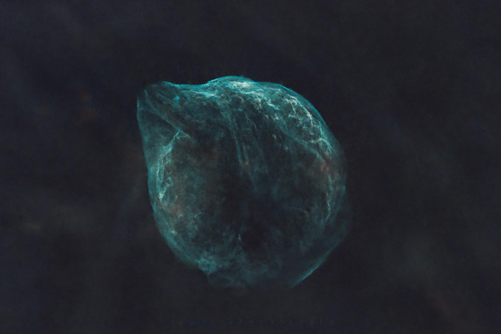
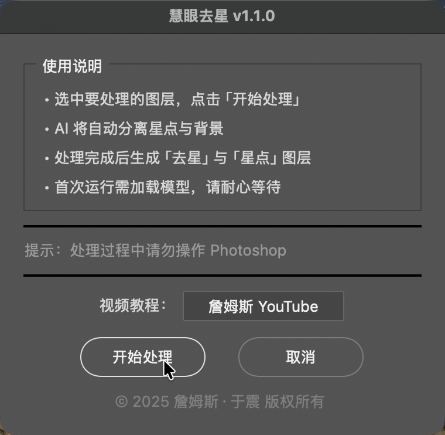
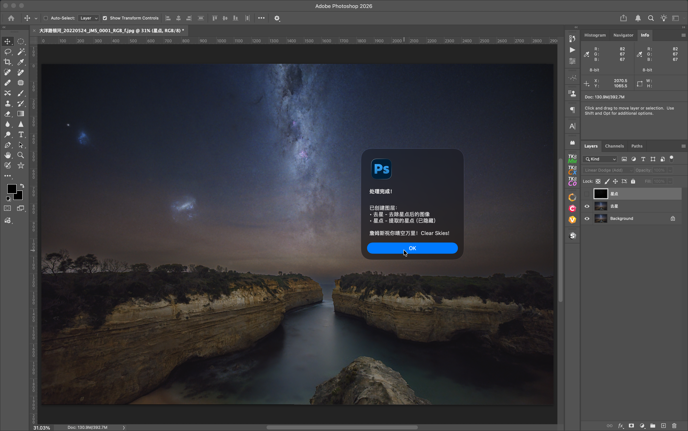
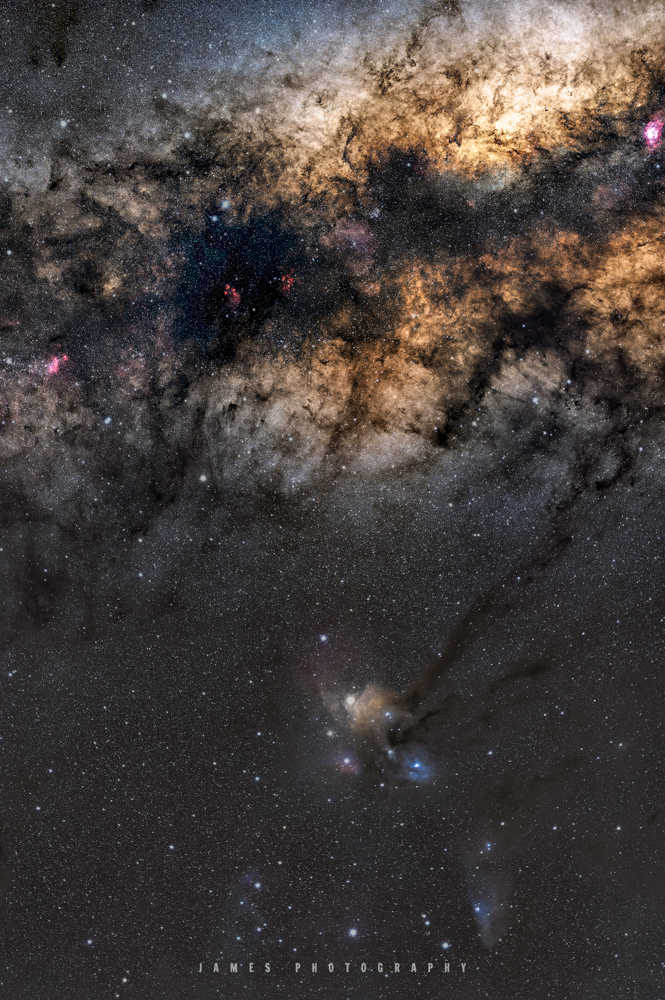

慧 眼 去 星
一键分离星点，完美保留银河与星云细节
🎬
【视频占位符】
请在微信公众号编辑器中插入视频
B站视频：BV1bwzWB2Edm
▲ 一分钟了解慧眼去星
v1.1.0 版本更新说明
之前的 Windows 版本在部分用户电脑上出现无法运行的问题，经排查发现是由于
StarNet 模型在不同 Windows 系统上的安装目录不同导致的路径兼容性问题。
新版本 v1.1.0 已修复此问题，在 Windows 11 系统上测试通过。如果您之前遇到过问题，请重新下载最新版本。
关于 Terminal 窗口
Windows 版本启动后会弹出一个 命令行终端窗口，这是正常现象。
终端窗口会实时显示去星处理进度，让您了解当前处理状态。
处理完成后，终端窗口会自动关闭，去星结果将自动导入 Photoshop 图层。
⊞ Windows 下载地址
• 百度网盘（提取码 btfa）：
pan.baidu.com/s/1iYP85krulU0Wk1E_y4WRpw
• GitHub：
github.com/jamesphotography/SuperStarOff/releases

▲ 处理前：深空天体海豚星云布满星点

▲ 处理后：星点被分离，海豚星云细节完美保留
慧眼去星是一款专业的 星点分离工具，专门用于从星空银河与天文图像中分离星点，同时完美保留背景星云和深空天体的细节。
01
AI 深度学习
2026年全新训练模型，智能识别星点并精准去除，保护银河与星云纹理和暗部细节
02
Photoshop 无缝集成
支持 PS 2022-2026，作为插件无缝运行，自动生成去星图层和星点图层
03
16-bit 高精度
完美支持 16-bit TIFF 高动态范围图像，满足专业星空摄影需求
04
Apple Silicon 原生加速
原生支持 M1/M2/M3/M4 芯片 GPU 加速，处理速度提升数倍
05
免费 · 无套路
永久免费，无会员、无订阅、无隐藏收费，完全离线运行
STEP 01
打开图片
在 Photoshop 中打开星空图片

STEP 02
调用插件
文件 → 脚本 → 慧眼去星

STEP 03
开始处理
点击「开始处理」按钮

STEP 04
完成
自动生成「去星」和「星点」图层






慧眼去星 SuperStarOff
v1.1.0 · 免费下载
macOS 11.0+ · Apple Silicon 原生 · Windows 10/11
macOS 下载地址：
• 百度网盘（提取码 jhx5）：
pan.baidu.com/s/1TY9qSiVpbBBUtmDZ-QSawg
• GitHub：
github.com/jamesphotography/SuperStarOff/releases
Windows 下载地址：
• 百度网盘（提取码 btfa）：
pan.baidu.com/s/1iYP85krulU0Wk1E_y4WRpw
• GitHub：
github.com/jamesphotography/SuperStarOff/releases
官网：
superstaroff.jamesphotography.com.au
✓ macOS 版已签名并通过 Apple 公证
免费 · 无套路
慧眼去星永久免费，
没有任何隐藏收费、会员订阅或功能限制。
慧眼选鸟 SuperPicky
AI 鸟类摄影智能选片工具 (Mac/Windows)
superpicky.jamesphotography.com.au
慧眼观鸟 SuperBirdID
AI 鸟种智能识别 App (iOS)
App Store 搜索「慧眼观鸟」
彗星星轨 SuperStarTrail
星轨叠加合成工具 (Mac/Windows)
superstartrail.jamesphotography.com.au
开发者：詹姆斯·于震 (James Yu)
官网：superstaroff.jamesphotography.com.au